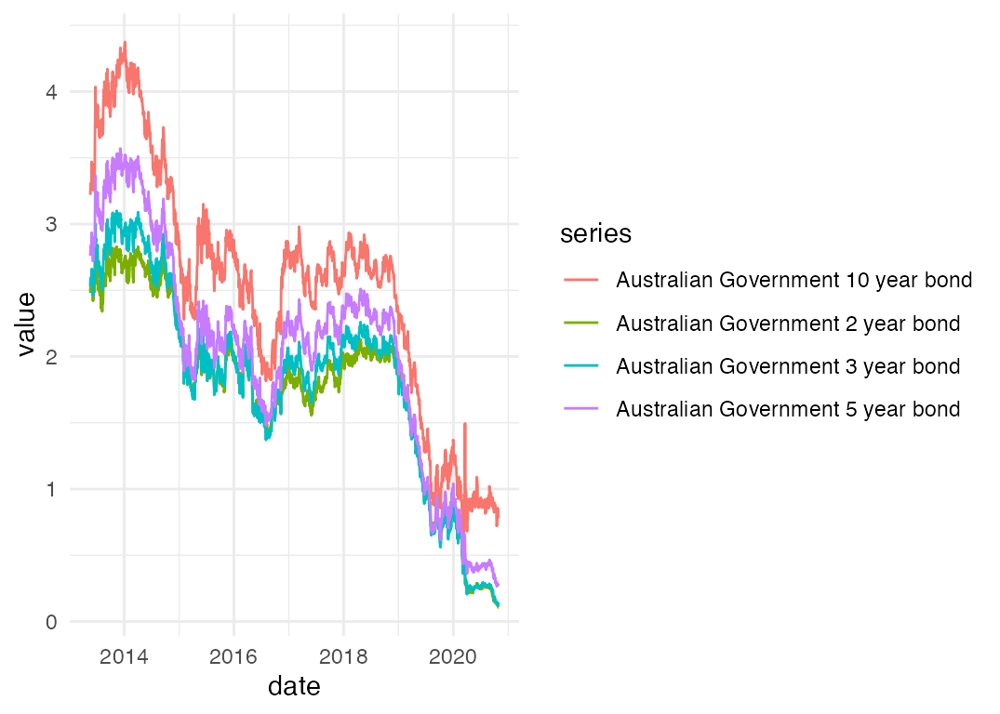
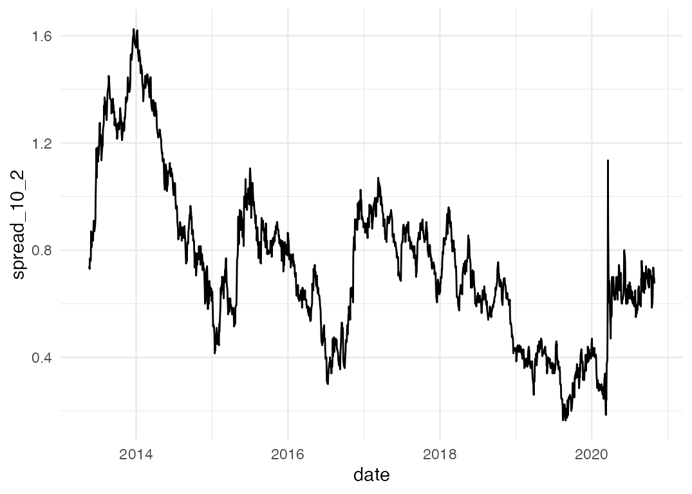
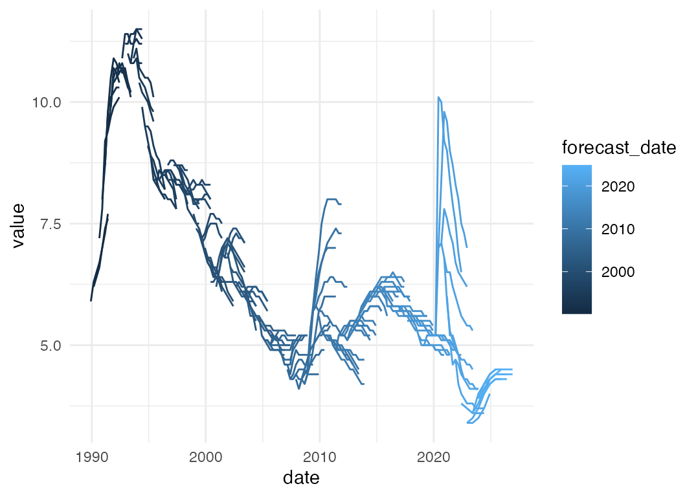

The Reserve Bank of Australia publishes lots of useful statistical tables on its website. The readrba package helps you:
- Download RBA statistical tables; and
- Import the data into R as a tidy tibble.
You can import the data using either the table number or the series ID.
library(readrba)
library(tidyr)
library(dplyr)
library(ggplot2)
library(lubridate)
theme_set(theme_minimal())Example: Individual series - 10-year bond yield
Let’s start off by visualising the yield on a 10 year Australian Government bond over time.
I want to find the series ID for the 10 year Australian Government
bond yield. The function browse_rba_series() will help me
find it. If you use the function with no argument, it will return a
tibble listing every data series published by the RBA (and readable by
{readrba}). I’ll specify a search string:
browse_rba_series("Australian government 10 year")| table_no | series | series_id | series_type | table_title | cur_hist | description | frequency |
|---|---|---|---|---|---|---|---|
| F2 | Australian Government 10 year bond | FCMYGBAG10 | Original | F2 Capital Market Yields - Government Bonds | historical | Yields on Australian Government bonds, 10 years maturity | Monthly |
| F2 | Australian Government 10 year bond | FCMYGBAG10D | Original | F2 Capital Market Yields - Government Bonds | current | Yields on Australian Government bonds, interpolated, 10 years maturity | Daily |
| F2 | Australian Government 10 year bond | FCMYGBAG10D | Original | F2 Capital Market Yields - Government Bonds | historical | Yields on Australian Government bonds, 10 years maturity | Daily |
| F2.1 | Australian Government 10 year bond | FCMYGBAG10 | Original | F2.1 Capital Market Yields - Government Bonds | current | Yields on Australian Government bonds, interpolated, 10 years maturity | Monthly |
OK, so we have two unique series for 10 year bond yield - one is daily data, the other monthly. These two series are split across four tables - a ‘current’ and ‘historical’ table for each of the daily and monthly series.
I’ll get the monthly data, which we can see from the table above has
the series ID FCMYGBAG10.
If you prefer, you can find the series ID by looking at the relevant spreadsheet from the RBA’s website.
Now we’ll use that series ID to download the data:
bond_yield <- read_rba(series_id = "FCMYGBAG10")A quick aside: the code above gives identical results to using
read_rba_seriesid("FCMYGBAG10"). The
read_rba_seriesid("SOMETHING") function is a wrapper around
read_rba(series_id = "SOMETHING").
OK, now we have the bond yield data in tibble form, let’s see what it looks like:
glimpse(bond_yield)
#> Rows: 626
#> Columns: 11
#> $ date <date> 1969-07-31, 1969-08-31, 1969-09-30, 1969-10-31, 1969-11-3…
#> $ series <chr> "Australian Government 10 year bond", "Australian Governme…
#> $ value <dbl> 5.80, 5.79, 5.81, 5.83, 5.85, 5.95, 5.95, 5.96, 6.05, 6.94…
#> $ frequency <chr> "Monthly", "Monthly", "Monthly", "Monthly", "Monthly", "Mo…
#> $ series_type <chr> "Original", "Original", "Original", "Original", "Original"…
#> $ units <chr> "Per cent per annum", "Per cent per annum", "Per cent per …
#> $ source <chr> "RBA", "RBA", "RBA", "RBA", "RBA", "RBA", "RBA", "RBA", "R…
#> $ pub_date <date> 2013-09-02, 2013-09-02, 2013-09-02, 2013-09-02, 2013-09-0…
#> $ series_id <chr> "FCMYGBAG10", "FCMYGBAG10", "FCMYGBAG10", "FCMYGBAG10", "F…
#> $ description <chr> "Yields on Australian Government bonds, 10 years maturity"…
#> $ table_title <chr> "F2 Capital Market Yields - Government Bonds", "F2 Capital…The data you import using read_rba() is always in this
standard tidy format. The values are in the value
column.
Let’s make a graph of the 10 year bond yield over time:

That’s a bit normcore-basic ggplot, but not bad. With a few lines of code, we’ve got an up-to-date graph of the 10 year bond yield.
Example: Multiple series from a table - 2, 3, 5 and 10 year bond yields
Now we’ll have a look at another example, this time using multiple data series from the one table. I want to make a graph of Australian Government bond yields at different maturities, over time. This time I’ll confine myself to the recent data, at daily frequency.
browse_rba_tables("government bond")| title | no | url | current_or_historical | readable |
|---|---|---|---|---|
| Capital Market Yields – Government Bonds – Daily | F2 | https://www.rba.gov.au/statistics/tables/xls/f02d.xlsx | current | TRUE |
| Capital Market Yields – Government Bonds – Monthly | F2.1 | https://www.rba.gov.au/statistics/tables/xls/f02hist.xlsx | current | TRUE |
| Capital Market Yields – Government Bonds – Daily – 1995 to 17 May 2013 | F2 | https://www.rba.gov.au/statistics/tables/xls-hist/f02dhist.xls | historical | TRUE |
| Capital Market Yields – Government Bonds – Monthly – 1969 to May 2013 | F2 | https://www.rba.gov.au/statistics/tables/xls-hist/f02histhist.xls | historical | TRUE |
The daily data is in table F2. If you prefer, you can look up the table on the RBA website and find the table number that way.
Now we know the table number that contains the data we want, let’s load it into r.
f2 <- read_rba("f2")This table looks just like the single series table we downloaded earlier: . Unlike the single series table - which only contained the ten year bond yield - we now have a tidy tibble containing a number of data series. Here’s what we’ve got:
unique(f2$series)
#> [1] "Australian Government 10 year bond"
#> [2] "Australian Government 2 year bond"
#> [3] "Australian Government 3 year bond"
#> [4] "Australian Government 5 year bond"
#> [5] "Australian Government Indexed Bond"
#> [6] "NSW Treasury Corporation 10 year bond"
#> [7] "NSW Treasury Corporation 3 year bond"
#> [8] "NSW Treasury Corporation 5 year bond"I’m not interested in NSW bonds, nor indexed bonds, so we’ll need some brief {dplyr}-ing of the data before we can get down to graphing.
We’ve dropped the series we’re not interested in, going from 15072 rows to 7536 rows. Now let’s graph:

Nice! Again, normcore aesthetics aside, we’ve got a decent plot with a few lines of code. Using the same data, we can have a look at the spread between the yield on 10 year and 2 year bonds, as a rough measure of the slope of (a portion of) the yield curve.
filtered_f2 %>%
select(date, series, value) %>%
spread(key = series, value = value) %>%
mutate(spread_10_2 = `Australian Government 10 year bond` - `Australian Government 2 year bond`) %>%
ggplot(aes(x = date, y = spread_10_2)) +
geom_line()
Example: RBA forecasts
The package also includes all public forecasts of key economic
variables made by the Reserve Bank since 1990. The
rba_forecasts() function returns these forecasts in a tidy
tibble – including the latest forecasts, scraped from the Statement on
Monetary Policy.
forecasts <- rba_forecasts()Here’s what they look like:
#> Rows: 6,791
#> Columns: 8
#> $ series_desc <chr> "CPI - 4 quarter change", "CPI - 4 quarter change", "CPI…
#> $ forecast_date <date> 1990-03-01, 1990-03-01, 1990-03-01, 1990-03-01, 1990-03…
#> $ notes <chr> NA, NA, NA, NA, NA, NA, NA, NA, NA, NA, NA, NA, NA, NA, …
#> $ source <chr> "JEFG", "JEFG", "JEFG", "JEFG", "JEFG", "JEFG", "JEFG", …
#> $ value <dbl> 8.6, 7.6, 6.5, 6.0, 5.9, 6.2, 5.9, 6.3, 6.5, 6.7, 7.0, 7…
#> $ date <date> 1990-03-01, 1990-06-01, 1990-09-01, 1990-12-01, 1991-03…
#> $ year_qtr <dbl> 1990.1, 1990.2, 1990.3, 1990.4, 1991.1, 1991.2, 1989.4, …
#> $ series <chr> "cpi_annual_inflation", "cpi_annual_inflation", "cpi_ann…Let’s visualise all the Bank’s unemployment rate forecasts since 1990:
forecasts %>%
filter(series == "unemp_rate") %>%
ggplot(aes(x = date,
y = value,
group = forecast_date,
colour = forecast_date)) +
geom_line()
Example: change in RBA forecasts
Now let’s make a chart that compares the RBA’s latest forecasts to its previous forecasts.
# We've already created the `forecasts` object, like this:
# forecasts <- rba_forecasts()
latest_two <- forecasts %>%
filter(forecast_date %in% c(max(forecast_date),
max(forecast_date) - months(3)))
latest_two %>%
group_by(series_desc) %>%
# Only include series for which we have forecasts in both of the latest SMPs
filter(length(unique(forecast_date)) >= 2) %>%
ungroup() %>%
mutate(forecast_date = format(forecast_date, "%b %Y")) %>%
ggplot(aes(x = date, y = value, col = forecast_date)) +
geom_line() +
guides(colour = guide_legend(title = "Forecast issued: ")) +
facet_wrap(~series_desc, scales = "free_y",
labeller = label_wrap_gen(17)) +
theme_minimal(base_size = 12) +
theme(legend.position = "top",
legend.direction = "horizontal",
legend.title = element_text(),
axis.title = element_blank(),
axis.text = element_text(size = 6),
plot.margin = margin(),
strip.text = element_text(size = 8)) +
labs(subtitle = paste0("RBA's forecasts issued in ",
unique(latest_two$forecast_date) %>% format("%B %Y") %>% paste(collapse = " and ")),
caption = "Source: RBA Statement on Monetary Policy")